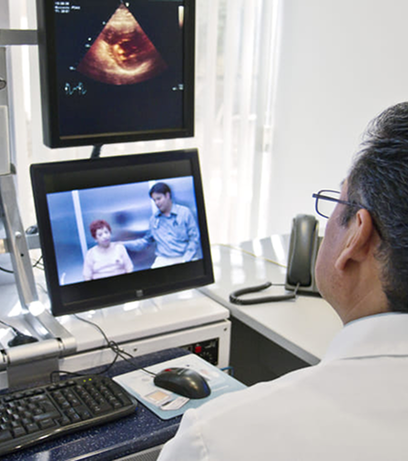

Tecnico di telemedicina
Il tecnico di telemedicina si occupa di supportare visite mediche, controlli e consulenze a distanza attraverso l’utilizzo di piattaforme digitali. Il suo compito è aiutare medici e pazienti a usare correttamente strumenti come videoconsulti, app sanitarie, dispositivi per il monitoraggio dei parametri vitali e cartelle cliniche digitali. In questo modo facilita la comunicazione tra paziente e personale sanitario, rendendo più semplice seguire le cure anche senza recarsi fisicamente in ospedale o in ambulatorio.
Nel futuro questa figura sarà sempre più richiesta perché molte attività sanitarie potranno essere svolte anche da casa, soprattutto per anziani, persone con malattie croniche o pazienti che vivono lontano dalle strutture mediche. Il tecnico di telemedicina unisce competenze informatiche, conoscenze sanitarie di base e capacità di comunicare con le persone. Il suo lavoro sarà fondamentale per rendere la sanità più accessibile, veloce e vicina alle esigenze dei pazienti.